The bits of quantum computing
Qubits are to quantum computing what bits are to classical computing.
It is essential to first discuss how information is conceived classically in computers, with bits. After that, a clear and objective explanation of qubits and quantum information becomes more “palatable”. It is with this premise that this short essay unfolds, aiming to give the reader, enthusiastic about the subject, some applicable knowledge. First, a section about bits; then, a section about qubits.
Bits and “classical” information
A bit (acronym for Binary Term) is the smallest unit of information that exists in a classical computer. A bit can take, at a time, one of two states: the high state, denoted by the digit “1” or by the letter “H”, or the low state, denoted by the digit “0” or by the letter “L”. These two states have classical physical interpretations — they can represent electric voltages, electric currents, electric charges, among other things. The way in which the bit is stored, transmitted or processed is what defines which physical interpretation is appropriate.
Combinations of bits
The association of multiple bits creates information with more than two states. While one bit has a set of two states (“{0,1}”), an association of two bits has a set of four states (“{00, 01, 10, 11}”), an association of three bits has a set of eight states (“{000, 001, 010, 011, 100, 101, 110, 111}”), and so on: an association of “n” bits has a set of 2ⁿ states.
A mathematical device that can be used to represent these sets of states of “n” bits is the Cartesian product (denoted by the symbol “×”).
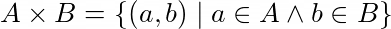
The Cartesian product is an operator that produces a set of tuples with all possible combinations of elements belonging to the operand sets.
The Cartesian product can be used with bits as follows:
States of 2 bits: {0,1}×{0,1} = {(0,0), (0,1), (1,0), (1,1)}
States of 3 bits: {0,1}×{0,1}×{0,1} ={(0,0,0), (0,0,1), (0,1,0), (0,1,1), (1,0,0), (1,0,1), (1,1,0), (1,1,1)}
States of n bits:
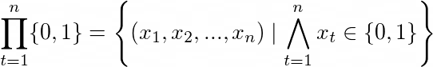
Perhaps this last definition was not very clear. This symbol “Π” (the capital Greek letter Pi) with the expression “t=1” as a subscript and the letter n as a superscript is a product operator — a sequence of products of n sets {0,1}, such as “{0,1}₁×{0,1}₂×…×{0,1}ₙ”. The result is a set of 2ⁿ different tuples “(x₁, x₂,…,xₙ)” in which each “xₜ” is a number 0 or 1.
Natural numbers as bits
Every number system has a base. The decimal number system, which is the system we are most used to, has base 10 — natural numbers are represented by sequences of digits from 0 to 9 (10 different symbols). The number 152, for example, is represented in the decimal system by the sequence of digits “(1,5,2)”. In a general case, a natural number “X” is represented in the decimal system by the sequence of “n” digits “(x₍ₙ₋₁₎,…,x₂,x₁,x₀)”, such that:
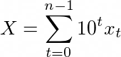
The number 152, for example, is equal to 1×10²+5×10¹+2×10⁰.
Likewise, it is possible to form natural numbers with sequences of bits — just use the binary number system, of base 2. In the binary system, natural numbers are represented by sequences of digits from 0 to 1 (bits). A natural number “X” is represented in the binary system by the sequence of “n” bits “(x₍ₙ₋₁₎,…,x₂,x₁,x₀)”, such that:
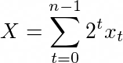
In this case, since an association of “n” bits has a set of 2ⁿ distinct states, “X” can only take values from 0 to 2ⁿ-1, which corresponds to a total of 2ⁿ different values (remember that “0” counts). In mathematical terms, this means that:
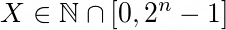
The following tables show some examples of natural numbers in the decimal system and in the binary system.
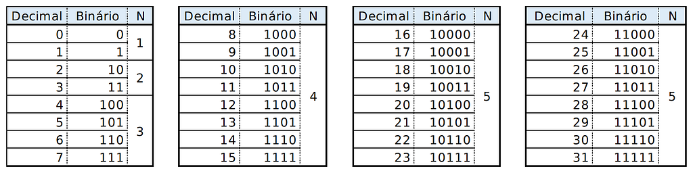
It is also possible to represent integers, real numbers and complex numbers with sequences of bits, but it is not worth explaining that here.
Qubits and quantum information
A qubit (acronym for Quantum Bit) is the equivalent of the bit for quantum computing. Just as the bit is the smallest unit of information of classical computing, the qubit is the smallest unit of information of quantum computing. In contrast to bits, a qubit can take an infinity of states, which includes the states |0⟩, |1⟩, and superpositions of these two. However, when the state of the qubit is checked experimentally, it manifests itself probabilistically as |0⟩ or |1⟩. These infinite states of the qubit are physically interpreted as quantum states — states of physical systems that obey the laws of quantum mechanics.
Qubit states
The states of a qubit are defined as vectors in complex vector spaces. The state space of a qubit has a basis of two orthonormal vectors: |0⟩ and |1⟩.
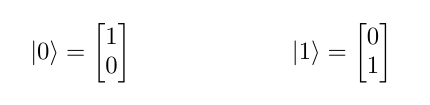
As you may have noticed, a value (such as 0 or 1) between the characters “|” and “⟩” corresponds to a vector. This symbol is called a ket. There is also the bra symbol (“⟨…|”), for which ⟨x| corresponds to the conjugate transpose of the ket |x⟩. In this case, ⟨x|y⟩ is the inner product of the vectors |x⟩ and |y⟩. This notation is called Bra-ket or Dirac notation. The vectors represented by Bra-ket notation belong to Hilbert spaces — vector spaces with notions of angle and distance that do not necessarily have finite dimensions.
The states of a qubit can be defined by the following linear combination:
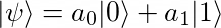
Where |ψ⟩ is a vector in the vector space ℂ² that represents the state of the qubit, and the coefficients a₀ and a₁ are complex numbers that represent the probability amplitudes of the states |0⟩ and |1⟩.
When the state |ψ⟩ is measured experimentally, even when it is in a superposition of the states |0⟩ and |1⟩, it always manifests itself probabilistically as |0⟩ or |1⟩. The probability of the state |0⟩ manifesting is ‖a₀‖² (square of the absolute value of a₀), and the probability of the state |1⟩ manifesting is ‖a₁‖² (square of the absolute value of a₁). The sum of the probabilities must always be 1.
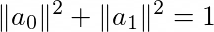
The phenomenon of the probabilistic “manifestation” of the states of a quantum system is known as quantum state collapse.
Euler's identity
The expression “eⁱᶲ” (“e” to the power of “i” “phi”) is very common in quantum computing. The letter “e” is Euler's constant, which is approximately 2.718281828459045235360287. The letter “i” is the imaginary unit (square root of -1), and the Greek letter “ϕ” (phi) is any angle in radians. This expression has the following definition:
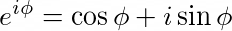
That is: “eⁱᶲ” corresponds to a complex number whose real part is “cosϕ” (cosine of phi) and whose imaginary part is “sinϕ” (sine of phi).
Now, consider the following formulas:
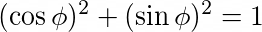
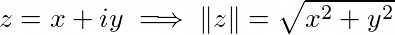
Formulas 9, 10 and 11 together lead to the following conclusion:
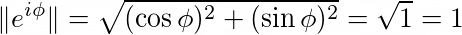
This means that, for any value of ϕ, “eⁱᶲ” always corresponds to a complex number of modulus 1. So, whenever you, reader, see the expression “eⁱᶲ” in a mathematical formula, remember: it is a complex number of modulus 1.
It is worth noting that, for any real number “u”, the modulus of “ueⁱᶲ” is equal to “u” itself.
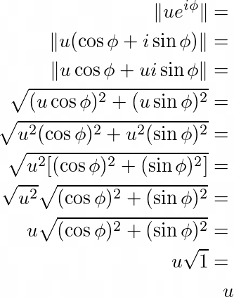
Bloch sphere
Graphically representing a vector in ℂ² is not so simple. A single complex number with a nonzero imaginary part is analogous to a vector in ℝ² (one dimension for the real part and another for the imaginary part), and following this same logic, a vector in ℂ² is analogous to a vector in ℝ⁴, which cannot be graphically represented using the Cartesian coordinate system. However, a vector in ℂ² that specifically represents the state of a qubit can be generalized by the following formula:
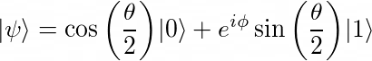
Where θ and ϕ are angles in radians.
Using this formula (15), it is possible to graphically represent the state of a qubit in polar coordinates, as shown in the following image:
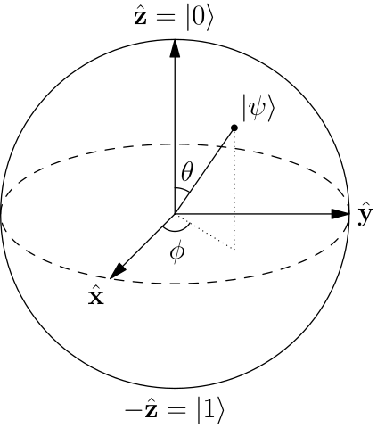

This graphical representation of the state of a qubit is called the Bloch sphere.
Note that, in the Bloch sphere, θ is represented as the angle between the vector |ψ⟩ and the z axis, and ϕ is represented as the angle between the projection of the vector |ψ⟩ on the xy plane and the x axis.
The states |+〉, |-〉, |+i〉 and |-i〉
Besides the orthonormal basis states |0⟩ and |1⟩, there are other notable states for a qubit: |+⟩, |-⟩, |+i⟩ and |-i⟩ are notable superposition states because they are collinear with the x axis or the y axis on the Bloch sphere.
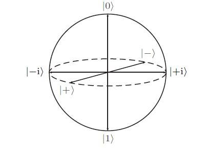

The states |+⟩ and |-⟩ are aligned with the x axis on the Bloch sphere, and have the following definitions:
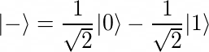
The states |+i⟩ and |-i⟩ are aligned with the y axis on the Bloch sphere, and have the following definitions:
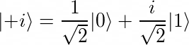
|+⟩, |-⟩, |+i⟩ and |-i⟩ are different states that have the same measurement statistics.
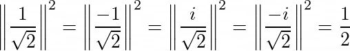
Any of these four states, when measured, tends to collapse into |0⟩ or |1⟩ with probabilities equal to 1/2. That is, it is random. Besides these four states, there is an infinity of other states that also have this same probability distribution.
Phase
Suppose that, in a hypothetical situation, a quantum state |ψ⟩ defined as “|ψ⟩=a₀|0⟩+a₁|1⟩” is measured many (almost “infinite”) times. 25% of the measurements result in |0⟩ and 75% of the measurements result in |1⟩. This means that the probabilities ‖a₀‖² and ‖a₁‖² are, respectively, 1/4 and 3/4. Here is a question: is it possible to deduce the values of the amplitudes a₀ and a₁ just by calculating the square roots of the probabilities ‖a₀‖² and ‖a₁‖²?
The answer is: no, because a₀ and a₁ are complex numbers. There are infinitely many complex numbers “aₙ” with the same modulus ‖aₙ‖.
Remember that all complex numbers “ueⁱᶲ” have modulus “u” (see equation 14). Based on this, it is possible to say that, if the probability ‖a₁‖² is 3/4, then the amplitude a₁ is “(√3/√4)eⁱᶲ” for some unknown value of ϕ. This is where the concept of phase comes in: the phase is a parameter of the quantum state that does not affect the measurement statistics.
Look at equation 15 again:

Note that, of the two parameters θ and ϕ, only the parameter θ affects the measurement statistics of |ψ⟩. For any value of ϕ, the probability distribution of the measurement of |ψ⟩ will be the same. It is said that “eⁱᶲ” is the phase factor of |1⟩ in the linear combination of the state |ψ⟩.
The states |+⟩, |-⟩, |+i⟩ and |-i⟩, for example, are states whose parameters ϕ are, respectively, “ϕ=0”, “ϕ=π”, “ϕ=π/2” and “ϕ=3π/2”. In all four cases, “θ=π/4”.
‘Phase’ is a commonly used term in quantum mechanics, with several different meanings dependent upon context. At this point it is convenient to review a couple of these meanings. Consider, for example, the state “eⁱᶿ|ψ⟩”, where |ψ⟩ is a state vector, and θ is a real number. We say that the state “eⁱᶿ|ψ⟩” is equal to |ψ⟩, up to the global phase factor “eⁱᶿ”. It is interesting to note that the statistics of measurement predicted for these two states are the same.
This quote is from the book Quantum Computation and Quantum Information, by Michael A. Nielsen and Isaac L. Chuang.
In a state “eⁱᶿ|ψ⟩” of a qubit or a register, the global phase factor “eⁱᶿ” makes no difference in the context of a quantum algorithm, and can even be disregarded. However, the difference between the phases “eⁱᶿ” and “eⁱ⁽ᶿ⁺ᶲ⁾” in “eⁱᶿ|ψ⟩ = αeⁱᶿ|0⟩ + βeⁱ⁽ᶿ⁺ᶲ⁾|1⟩” must be taken into account, and is even essential for the operation of some quantum algorithms (such as Grover's algorithm and the quantum Fourier transform).
Quantum registers
A quantum register is a grouping of multiple qubits.
All quantum states must be represented by vectors, including states formed by more than one qubit. In this case, the Cartesian product does not work. It is necessary to use an operator that produces a third vector instead of a set of tuples to represent the combinations of states of the qubits. This operator is the tensor product (more specifically, the Kronecker product), represented by the symbol “⊗”.
The state that encompasses a pair of states |a⟩ and |b⟩ can be expressed as a tensor product of |a⟩ and |b⟩ as follows:
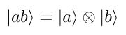
It is said that |ab⟩ is the global state of the register made up of the pair of qubits with states |a⟩ and |b⟩.
This tensor product can be “expanded” as follows:
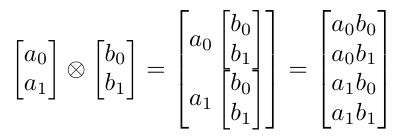
Where “[a₀, a₁]ᵀ=|a⟩” and “[b₀, b₁]ᵀ=|b⟩”.
In general, a tensor product between a pair of matrices A and B has the following definition:
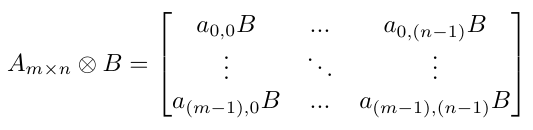
Going back to the example of the pair of qubits, suppose that the states |a⟩ and |b⟩ are:
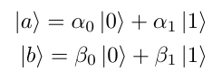
The global state |ab⟩ can be defined as the following linear combination of 4 basis states:
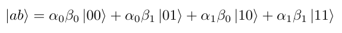
Considering |ψ⟩=|ab⟩, α=α₀β₀, β=α₀β₁, γ=α₁β₀, δ=α₁β₁, and replacing the amplitudes αₙβₘ by the equivalent α, β, γ and δ, we have:
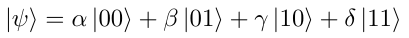
The sum of the probabilities must be equal to 1.
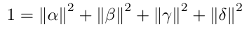
Based on the fact that (α₀β₀)(α₁β₁)=(α₀β₁)(α₁β₀), it is possible to state that, for the linear combination of |ψ⟩ to actually be a tensor product of the linear combinations of |a⟩ and |b⟩, the following relation must be satisfied:
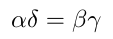
If the global state of a pair of qubits does not satisfy this relation, this global state cannot be represented as a tensor product of a pair of independent linear combinations. The cases in which this happens will be explained in the section about entangled qubits.
Entangled qubits
Suppose that a 2-qubit quantum register has the following global state:
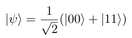
This is a Bell state, a state of two entangled qubits.
Representing the Bell state in the same format as equation 26, where the probability amplitudes are α, β, γ and δ, we have that:
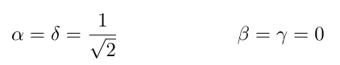
In this case, it is evident that the relation αδ=βγ, which is equivalent to ½=0, is false (that is, αδ≠βγ). This means that the Bell state is not a tensor product of two independent linear combinations, and this is what defines entanglement in quantum computing — if a global state of n qubits cannot be represented as a “tensor product” of n independent linear combinations, then there is entanglement in the register.
Besides this first one, there are three other Bell states, also known as EPR pairs. The set of the four Bell states is the following:
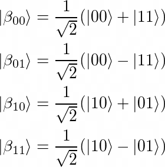
Bell states have a very interesting characteristic: in an ideal situation, when the state of the register is measured and one of the qubits collapses into |0⟩ or |1⟩, it is possible to infer how the other qubit collapsed. For example: in the states |β₀₀⟩ and |β₀₁⟩, when one of the qubits collapses into |0⟩, the other necessarily collapses into |0⟩. Likewise, when one of the qubits collapses into |1⟩, the other necessarily also collapses into |1⟩.
If we can represent an n-qubit state as the tensor product of the states of individual Qubits “|q₀,q₁,…,qₙ⟩=|q₀⟩⊗|q₁⟩⊗…⊗|qₙ⟩”, the state is called separable. However, due to the nature of superposition, it may be that a
multi-qubit state is non-separable and individual qubit states are not well defined independent of other qubits. This non-local correlation phenomenon known as entanglement is a necessary resource to achieve the exponential speedup of quantum compared to classic computation.
This quote is from the book Mastering Quantum Computing with IBM QX, by Dr. Christine Corbett Moran.
References
- Book Quantum Computing and Quantum Information, by Michael A. Nielsen and Isaac L. Chuang. Publisher: Cambridge University Press. https://doi.org/10.1017/CBO9780511976667
- Book Mastering Quantum Computing with IBM QX, by Dr. Christine Corbett Moran. Publisher: Packt. ISBN 9781789136432. Information available at https://www.packtpub.com/application-development/mastering-quantum-computing-ibm-qx (accessed on Jun 27, 2020)
- Book Quantum Computing for Computer Scientists, by Noson S. Yanofsky and Mirco A. Mannucci. https://doi.org/10.1017/CBO9780511813887
- Monograph Uma Introdução à Computação Quântica (An Introduction to Quantum Computing), by André Luís Vignatti, Francisco Summa Netto and Luiz Fernando Bittencourt. Defended at the Department of Informatics of the University of Paraná. Available at https://www.ic.unicamp.br/~bit/arquivos/tg.pdf (accessed on Jun 27, 2020)
- Article Uma Introdução aos Algoritmos Quânticos (An Introduction to Quantum Algorithms), by Renato Portugal (LNCC), Carlile C. Lavor (IME-UERJ), Luiz M. Carvalho (IME-UERJ) and Nelson Maculan (COPPE-UFRJ).